Upham Corner's Library
2022
This project focused on designing a library for Upham's Corner in Boston, Massachussetts.
Using the library as a facilitator of time between the past and present, the library acts as a sancturary for those looking to seek asylum from the fast paced world. Using a series of moving bookshelves and walls, the library responds and interacts with the community to best serve changing needs.
This project was completed under the supervision of Jeremy Ficca, Katie LaForest, and Jeff King at Carnegie Mellon University.

